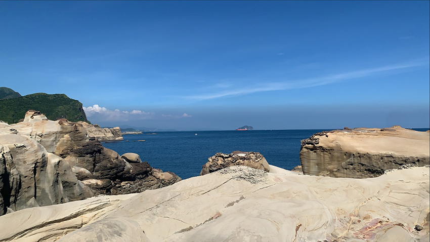
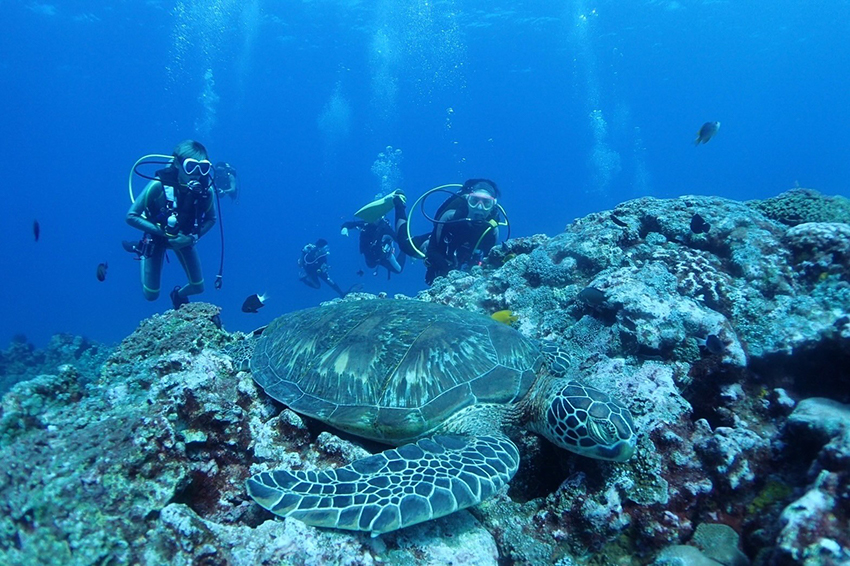

人生總是伴隨著各樣的壓力，或許從出生的那一刻起，我們就不得不成為了參賽者之一，小時候在腦中構築偉大的夢想，夢想卻隨著年紀越變越小，「到底什麼時候才能完全的卸下壓力、拋棄責任！」每個疲憊的夜晚，腦海中總是盤旋著這句令人頹靡喪志的一句吶喊、一句掙扎，就像是金箍棒一樣限制住我的想像，直到在社群媒體上看到了朋友時常在海邊出沒，在水底的悠然自在，那一刻，帶領我走向了水肺潛水這條不歸路。
|  |
醫學證實「腦內啡」是最天然的抗憂鬱藥物，能緩解焦慮，而如果能將它量化，我會說：「潛水一次，抵十顆百解憂。」不單純只是因為是個不用流汗就能夠燃脂的無痛運動，而是在水底的世界實在太忙!!忙到你無暇去思考你那荒腔走板的悲劇人生，如果讀到這裡，你此刻腦內想著：「不就是看個魚，踢個腳，是能多忙?」那你就大錯特錯了！在下水前需要一套前置作業，從穿防寒衣(俗稱水母衣)，帶面鏡並除霧外，你還需要自己裝氣瓶，並將沉甸甸的它背在身後，而為了能在水上浮起來，則須再穿上充氣背囊，讓你一秒cosplay忍者龜，但真的不用擔心，下水後這些重量都將由海水為你承擔，就如同世俗給予的壓力，都能夠在潛入水中的剎那，完全的放下。
海底的世界總是很不一樣，礁石會受到光線照射的不同，擁有多樣的色彩，水流和溫度也決定著今天出沒的生物會是什麼，所以潛水時真的不用想太多，因為你什麼都控制不了，唯一能控制的只有你自己。只有當自己完全的享受時，慢慢踢著穿著蛙鞋的腳，時間彷彿停滯在那一刻，轉頭看著身旁的礁石上生長千奇百怪的藻類，甚至能找到比指甲片還迷你卻又身穿彩衣的浮游生物，望向遠方發現一個快速游過暗影，是海龜還是魟魚?不得而知，然而回首時，發現自己竟然闖進如散場後的球賽般，身旁被一大群沙丁魚圍繞著，這樣與眾不同的體驗，真的只有水肺潛水才能擁有。
|  |
聽著自己平穩的呼吸聲伴隨著水流中飽含電解質的摩擦聲，一切都十分療癒身心，跟著潛伴們一同探索未知的水下世界，明明素未謀面，卻能產生出深厚的羈絆，因為都一樣喜歡被海水包圍著、一樣重視海洋保育、一樣擁有顆勇於冒險的心，上岸後大家嘴裡一邊吃著第二頓的早餐補充體力，一邊激動地互相分享剛剛看到的戰利品。水肺潛水也許是筆不小的開銷，卻能保證是一項不錯的投資，不但能健身，更能健心，或許每個人都背負著比氣瓶重上十倍的壓力，但因為有這樣的興趣，讓我們都能在庸庸碌碌的時光中，抓住喘息的空間，即使是片刻的享受，都顯得意義非凡，當假日結束時，我也再次充飽電，準備戰勝生活中各樣壓力。